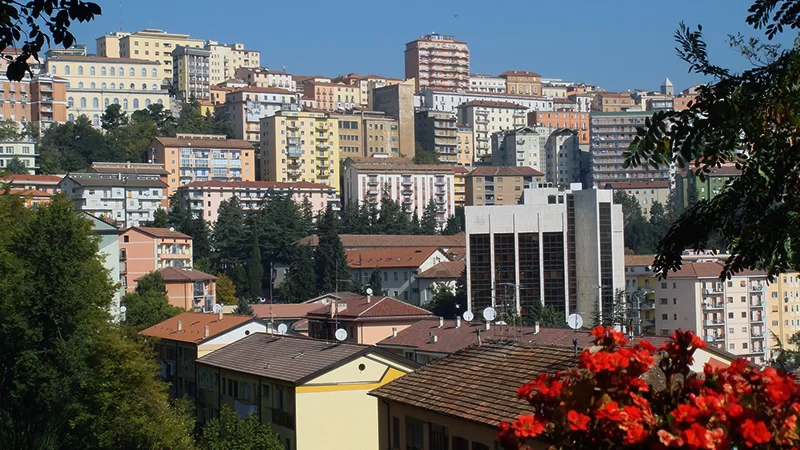
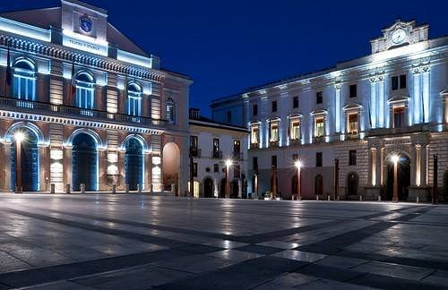

Ciao!
Mi chiamo Christian Di Nella, ho 16 anni e sono di Potenza, in Basilicata.
| Attualmente sono uno studente del 4° anno all'istituto Einstein-De Lorenzo e come indirizzo ho deciso di scegliere quello di informatica. |  |
Ho scelto il settore informatico per specializzarmi e imparare molte cose in questo campo, soprattutto perchè è stata una mia decisione e voglio realizzare il mio sogno di diventare un ottimo programmatore/ingegnere informatico. |
 |
Nel tempo libero mi piace uscire con gli amici, giocare ai videogiochi, andare in palestra, cucinare, passare del tempo con la mia famiglia e studiare. |  |
 |
 |
 |
Le materie che studio
- Informatica
- Matematica
- Italiano
- TPSIT
- Sistemi e Reti
- Telecomunicazioni
- Inglese
- Storia
- Educazione Fisica
- Educazione Civica
Obiettivi e progetti futuri
| Obiettivi | Descrizione degli obbiettivi |
|---|---|
| Scolastici | Vorrei conseguire il diploma e puntare anche alla conquista della lauea. |
| Personali | Dei miei obiettivi è quello di migliorare in palestra e poter viaggiare in giro per il mondo. |
Uno dei miei progetti futuri è quello di intraprendere un progetto riguardante lo sviluppo di applicazioni. Collaborerei con i miei compagni per realizzare un modello di una app che possa essere utile in questi tempi. Attraverso esperimenti e raccolta di dati, cercherei di pubblicare una versione di prova e poi man mano svilupparla al meglio.
Un altro progetto è l'iniziare a prepararmi per il test di ammissione all'università. Vorrei approfondire le mie conoscenze in materia informatica. Questo progetto comprende la partecipazione a corsi di preparazione, la lettura di libri consigliati e la produzione di schemi di studio. È un passo importante verso il mio futuro e voglio farmi trovare pronto.
Infine, desidero trascorrere, in un futuro, molto tempo all'estero. Dovrei migliorare il mio inglese e imparare di più sulla cultura dei luoghi che volgio visitare, come ad esempio la Finlandia. Durante il soggiorno, esplorerei le città locali e farei nuove amicizie, condividendo momenti speciali e scoprendo nuovi punti di vista.
Questi sono solo alcuni dei progetti che ho in mente. Ogni esperienza rappresenterebbe un'opportunità per crescere e imparare in modi nuovi!
Le mie passioni
| Calcio | Palestra |
|---|---|
| Il calcio è più di un gioco; è una danza di emozioni e impegno che unisce milioni di cuori in un'unica straordinaria passione. Questa passione da parte mia per il calcio è nata grazie al calciatore professionista Cristiano Ronaldo. | Allenarsi in palestra è un viaggio verso la forza interiore, dove ogni goccia di sudore rappresenta una vittoria personale e un passo verso il meglio di sé. Io mi alleno per migliorare sempre di più e raggiungere un fisico ideale e che mi piaccia. |
Cristiano Ronaldo
| Descrizione | ||
|---|---|---|
| Cristiano Ronaldo dos Santos Aveiro, meglio noto come Cristiano Ronaldo, è un calciatore portoghese, attaccante dell'Al-Nassr e della nazionale portoghese, di cui è capitano e con cui è diventato campione d'Europa nel 2016 e ha vinto la UEFA Nations League 2018-2019. Soprannominato CR7 per via del numero di maglia che lo ha contraddistinto per gran parte della sua carriera, è ritenuto uno dei migliori calciatori di tutti i tempi. È inoltre il marcatore più prolifico nella storia del calcio, nonché il detentore dei primati di presenze e di reti nelle nazionali di calcio. Rientra nella ristretta cerchia dei calciatori con almeno 1000 presenze in carriera, nella quale è il giocatore di movimento con il maggior numero di apparizioni. Nel corso della sua carriera ha indossato le maglie di Sporting Lisbona, Manchester United, Real Madrid, Juventus e Al-Nassr, vincendo a livello internazionale cinque UEFA Champions League, due Supercoppe UEFA, quattro Coppe del mondo per club FIFA e una Coppa dei Campioni araba. Detiene il primato di presenze, di reti e di assist nella UEFA Champions League e nelle competizioni UEFA per club. | ||

|
||
|
Se clicchi la foto qui sopra di Cristiano Ronaldo ti manderà sulla pagina wiki dedicata a questo straordinario calciatore. Ecco qui un video sui goal più belli e indimenticabili fatti da CR7! |
||
Potenza
Potenza è il capoluogo della Basilicata, una regione situata nel sud Italia. Situata su una collina a circa 819 metri sopra il livello del mare, Potenza è conosciuta non solo per la sua posizione panoramica, ma anche per la sua ricca storia e cultura.
Una delle celebrazioni più importanti di Potenza è la festa di San Gerardo, il Santo Patrono della città, che si tiene il 30 aprile. Durante questa festa, la città è animata da processioni, concerti, spettacoli di fuochi d'artificio e altre manifestazioni culturali. Anche il Carnevale ha una sua importanza, con sfilate di carri allegorici e costumi colorati.
La gastronomia di Potenza e della Basilicata in generale è ricca di sapori autentici, con piatti a base di ingredienti locali. Tra i piatti tipici ci sono le orecchiette con le cime di rapa, il pezzente (un piatto a base di carne di maiale), e formaggi come la cacioricotta. L'olio d'oliva lucano è molto rinomato e viene utilizzato in molti piatti.
Potenza presenta un mix di architettura storica e moderna. Il Duomo di San Gerardo, risalente al XII secolo, è un luogo di grande importanza religiosa e architettonica. Altri edifici storici includono il Palazzo di Giustizia e il Palazzo del Comune.
La tradizione musicale lucana è molto viva, con l’utilizzo di strumenti tipici come la fisarmonica e il tamburello. La taranta è una danza tradizionale che viene spesso eseguita durante le feste popolari.
Il dialetto potentino e lucano è una variante del napoletano, con influenze proprie che riflettono la storia e le tradizioni della regione.
Potenza ospita eventi culturali e festival che richiamano artisti e visitatori. La rassegna "Potenza Jazz", ad esempio, è un importante evento musicale che si svolge annualmente, portando live performance di artisti di spicco.
|  |  |
Qui sotto ho messo a disposizione il sito del Comune di Potenza!
Il Potenza Calcio
Rossoblù, Leoni, 'U Putenz
Il Potenza Calcio è una società calcistica con sede a Potenza, capoluogo della Basilicata, in Italia. Fondata nel 1919, la squadra ha una lunga storia e ha attraversato diverse fasi nel corso degli anni.
Il club gioca le sue partite casalinghe allo stadio "Viviani", che ha una capacità di circa 5.000 spettatori. I colori sociali della squadra sono il rosso e il blu e la mascotte è il leone rampante.
Nel corso della sua storia, il Potenza ha alternato periodi di successi a momenti di difficoltà, attualmente situata in Serie C però ha militando in diverse categorie del calcio italiano. Negli ultimi anni, il club ha cercato di risalire nelle categorie superiori, puntando su un mix di giocatori esperti e giovani talenti.
Il Potenza Calcio ha un forte seguito locale e rappresenta un'importante fonte di orgoglio per la comunità lucana. La rivalità storica con altre squadre della regione, come il Matera, rende le sue partite particolarmente sentite e competitive.
A livello di società, il Potenza ha anche investito in infrastrutture e nel settore giovanile, cercando di formare nuovi talenti e di rafforzare la propria presenza nel panorama calcistico regionale e nazionale.
Ecco il Palmarès:
- Serie C: 1 (1962-1963 girone C)
- Serie C2: 1 (1991-1992 girone C)
- Serie D: 3 (1960-1961 girone F)(1974-1975 girone G)(2017-2018 girone H)
- Eccellenza Basilicata: 1 (2013-2014)
- Promozione Basilicata: 2 (1956-1957)(1986-1987)
- Campionato Dilettanti Basilicata: 1 (1958-1959 girone A)
Clicca qui per visitare la pagina wiki del Potenza Calcio e saperne di più al riguardo!
Il sito del Potenza Calcio
Grazie per aver visitato il mio sito!